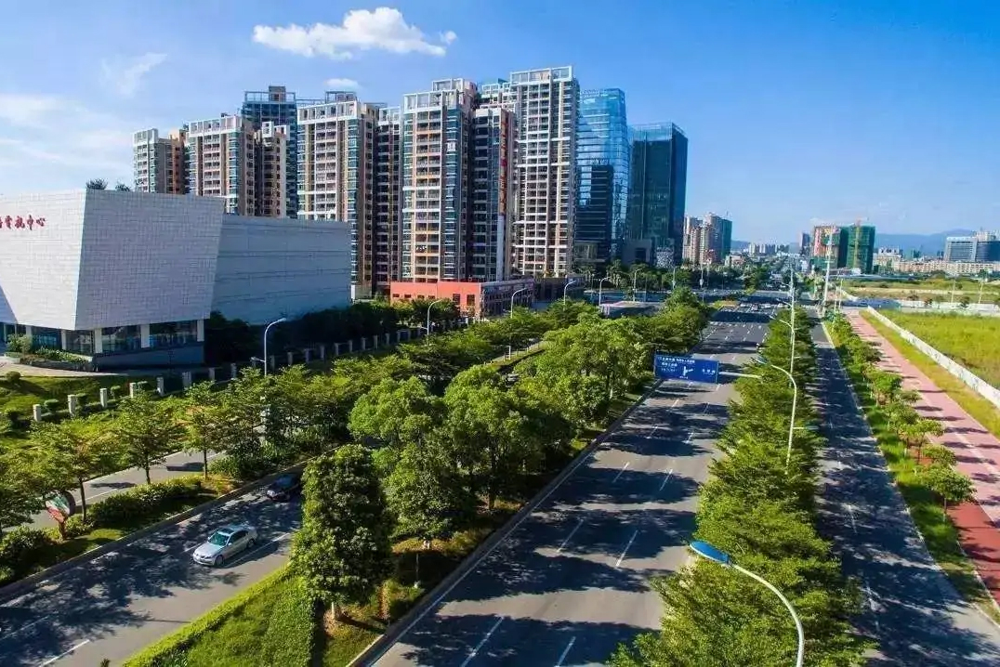

交通运输

截至2019年底，河源市全市公路通车里程16561.5公里，其中高速公路658.6公里，分别比上年增加325.8和153.3公里。全年客运量2980万人，下降18.4
%，旅客运输周转量37.55亿人公里，下降13%，货运量6879万吨，增长0.3%，货物运输周转量97.83亿吨公里，增长3.4%。全市民用汽车保有量达42.2万辆，比上年末增长
14.9%，其中私人汽车38.26万辆，增长14.6%。民用轿车保有量达25.8万辆，增长17%，其中私人轿车24.07万辆，增长16.9%。全年新建四级以上公路160公里，改造县乡公路83公里，新增水泥硬底化村道300公里；全年新增发电机组容量5.6万千瓦，新增11万伏及以上变电设备容量78.6万千伏安，输电线路83.1千米
。
铁路
河源境内的普速铁路有京九铁路、广梅汕铁路，高速铁路有赣深高速铁路、龙龙高速铁路。其中赣深高速铁路拟于2021年通车运营，龙龙高速铁路梅州至龙川段于2019年12月15日正式动工。境内办理客运业务的火车站有：河源站、龙川站、和平站。在建铁路车站有：河源东站、龙川西站、和平东站、东源站（河源北站）。
河源市是京九铁路进入广东省的第一座城市，又是广东省拥有铁路最长的市，境内龙川北站是华南地区最大的编组站
。京九铁路全线最长的五指山隧道、全线最高的黄沙尾大桥和赣深高铁广东段最长隧道松岗山隧道位于和平县境内 。
公路
国道：205国道、105国道、358国道、238国道、355国道、236国道等。
高速公路：广河高速公路（S2）、惠河高速公路（G35）、粤赣高速公路（G4511）、梅河高速公路（G35）、汕湛高速公路（S14）、大广高速公路（G45）、汕头－昆明高速公路（G78）、武汉－深圳高速公路（G4E）、河惠莞高速公路（G25）。规划路有河惠汕高速公路、龙寻高速公路、梅河韶高速公路等。
水运
新丰江贯通东西，东江贯通南北并两江在市区交汇，其中东江水运上至龙川，下通惠州、东莞、广州，在市区设有河源港、龙川设有老隆港，在江东新区古竹镇拟设古竹港。
机场
河源通用机场是广东省民用航空“十三五”规划新增通用机场，建设规模为A1级，定位为南方通用机场网络重要成员，拟选址江东新区古竹镇。
广州白云国际机场河源城市候机楼于2012年12月28日正式开通，于2018年9月18日迁至新址.
公交
1989年，源城区建委投放2辆客车作为公交车，开通了2条线路，是为河源公交事业之肇始。1994年下半年，市公用事业局与外地客车厂合作，以私人承包方式投放30辆小型公交车。2010年，市国资委组建绿都公交，统一经营市区和周边城乡公交，陆续开通了14条公交线路，投放了131辆“春天绿”公交车。2012年底，引进粤运交通，成立河源粤运公司，绿都公司隶之。2015年，陆续购进新能源公交车，进入纯电动时代。
截至2020年7月，河源新能源公交车数量增至170辆，运营线路增加到44条，并推出了一批定制线路，公交服务覆盖范围由市区集中居住区扩大到整个市区及周边仙塘、埔前、新港、临江、古竹等乡镇 。